新疆 · 北疆环线自驾路书
从乌鲁木齐出发，经赛里木湖的湛蓝、魔鬼城的苍茫、喀纳斯的金秋，最后从阿勒泰返回，一场关于湖泊、雅丹、森林与星空的公路旅行。
10
天
9
晚住宿
≈2300
公里
7
座城市
🗺️路线总览
乌鲁木齐 → 奎屯 → 赛里木湖 → 世界魔鬼城 → 克拉玛依 → 布尔津 → 喀纳斯 → 禾木 → 阿勒泰 → 乌鲁木齐

📅每日行程与风景
DAY 1 · 9.25
乌鲁木齐落地 → 奎屯
开启北疆环线
12:55 落地乌鲁木齐天山机场，取车后前往市区午餐，下午逛国际大巴扎，傍晚沿连霍高速开往奎屯。
今日风景：第一天的风景从城市逐渐过渡到北疆旷野。连霍高速穿过天山北麓的绿洲与戈壁，远处可见博格达峰的轮廓；傍晚抵达奎屯，这座因独山子大峡谷和天山北坡而闻名的城市，是进入伊犁河谷与北疆环线的门户。
2.5–3h
乌市→奎屯
0.5h
机场→大巴扎
🏨 奎屯友好购物中心团结南街亚朵
DAY 2 · 9.26
奎屯 → 赛里木湖
初见大西洋的最后一滴眼泪
穿越天山北麓，沿途从绿洲渐变到高山草原，午后抵达赛里木湖。先办理入住，傍晚看湖面日落与晚霞。
今日风景 · 赛里木湖：赛里木湖被誉为“大西洋最后一滴眼泪”，是新疆海拔最高、面积最大的高山冷水湖。九月底的赛湖呈现出宝石般的湛蓝，湖畔草甸金黄、远处雪峰连绵。推荐逆时针环湖，打卡月亮湾、天鹅乐水、点将台、S 弯与松树头；清晨可看湖面日出，夜里在无光害处拍银河，是此行最治愈的蓝色。
5.5–6h
车程
日落
推荐活动
🏨 赛里木湖逸扉酒店
DAY 3 · 9.27
赛里木湖环湖一日
90 km 环湖自驾
逆时针环湖，依次停留月亮湾、天鹅乐水、点将台、S 弯与松树头。中午在湖边野餐，夜里拍银河。
今日风景 · 赛里木湖深度：今天用一整天与赛湖相处。清晨湖面常泛起薄雾，日出时雪山被染成粉金色；正午的湖水最接近宝石蓝，适合航拍 S 弯公路与湖边草甸；傍晚的日落把西天烧成橘红，湖面如镜子般平静。若天气晴好，深夜可驱车到远离光害的湖岸拍银河。
90 km
环湖
全天
游玩
🏨 赛里木湖逸扉酒店
DAY 4 · 9.28
赛里木湖 → 魔鬼城 → 克拉玛依
从高山湖泊到雅丹戈壁
上午退房后经果子沟方向前往世界魔鬼城，看风蚀雅丹与戈壁日落，傍晚抵达石油之城克拉玛依。
今日风景 · 世界魔鬼城：乌尔禾世界魔鬼城是典型的雅丹地貌，亿万年的风蚀把戈壁雕琢成城堡、战舰、怪兽般的土丘。日落时分，整片大地被染成金红色，光影变化极具冲击力，也是《卧虎藏龙》《七剑下天山》等电影的取景地。景区可乘小火车游览，适合航拍与日落摄影。
4.5h
赛湖→魔鬼城
1h
魔鬼城→克拉玛依
🏨 克拉玛依一号井汇源路亚朵
DAY 5 · 9.29
克拉玛依 → 布尔津
五彩滩日落与冷水鱼
沿准噶尔盆地北缘一路向北，下午抵达布尔津。傍晚去五彩滩看额尔齐斯河丹霞，晚上逛夜市吃烤冷水鱼。
今日风景 · 五彩滩：五彩滩位于布尔津县城以北，是额尔齐斯河北岸的彩色雅丹地貌。日落时分，红色、黄色、紫色、白色的岩层在夕阳下层层分明，与河对岸葱郁的胡杨、白杨形成强烈对比。游览后还可去布尔津夜市品尝烤冷水鱼，是喀纳斯之行前最轻松的黄昏站点。
3.5–4h
车程
日落
五彩滩
🏨 布尔津枫岭漫
DAY 6 · 9.30
布尔津 → 喀纳斯 → 禾木
神的后花园
上午进入喀纳斯，游览神仙湾、月亮湾、卧龙湾，可选择登观鱼台。下午经贾登峪前往禾木村，看黄昏炊烟。
今日风景 · 喀纳斯：喀纳斯被称为“神的后花园”，是北疆秋色的核心。九月底十月初，白桦林金黄、云杉苍翠、湖水碧绿如玉。必游神仙湾、月亮湾、卧龙湾三湾晨雾，也可登观鱼台俯瞰喀纳斯湖全景。国庆期间游客密集，建议提前预约门票与区间车，清晨入园体验最佳。
2.5h
布尔津→贾登峪
1.5h
贾登峪→禾木
🏨 禾木希尔顿
DAY 7 · 10.1
禾木慢生活一日
晨雾、白桦林与星空
清晨登上哈登平台看日出与晨雾，上午在图瓦村落与白桦林间漫步，下午河边发呆、喝咖啡，夜里拍星空。
今日风景 · 禾木：禾木村是中国仅存的图瓦人村落之一，被誉为“神的自留地”。清晨炊烟与晨雾在木屋间缭绕，哈登平台是最佳日出观景点；白天可漫步白桦林与河边木栈道，晚上抬头便是璀璨星河。村内商业化较成熟，但秋景依旧充满童话感，适合放慢节奏住上两晚。
晨雾
哈登平台
全天
村内慢游
🏨 禾木希尔顿
DAY 8 · 10.2
禾木晨雾 → 阿勒泰
阿尔泰山下的缓冲站
早起再拍一次禾木晨雾，随后经阿禾公路 / 232 省道前往阿勒泰。下午逛桦林公园与将军山观景台。
今日风景 · 阿勒泰：阿勒泰被誉为“金山银水”，是阿尔泰山南麓的温润小城。克兰河穿城而过，河畔桦林公园在秋日一片金黄；将军山观景台可俯瞰城市与远山，天气好时能看到阿尔泰山雪顶。这里节奏慢、物价低，是北疆环线返程前最舒服的缓冲站，也能感受到浓郁的哈萨克风情。
4–5h
车程
下午
市区散步
🏨 阿勒泰一念山涧
DAY 9 · 10.3
阿勒泰 → 乌鲁木齐
S21 沙漠公路返程
沿 S21 阿乌高速纵穿古尔班通古特沙漠北缘，车少景阔。傍晚回到乌鲁木齐，晚上休整。
今日风景 · S21 沙漠公路：S21 阿乌高速是连接阿勒泰与乌鲁木齐的快速通道，纵穿古尔班通古特沙漠北缘。公路两旁是连绵的戈壁、雅丹与低矮植被，车少景阔，适合拍公路大片。沿途可见风车阵与远处天山余脉，是一程安静而苍茫的返程。
6–7h
车程
沙漠
公路风光
🏨 乌鲁木齐亚朵
DAY 10 · 10.4
乌鲁木齐 → 杭州
满载秋色返程
上午可补购干果与伴手礼，提前 2 小时抵达天山机场，13:20 起飞返回杭州。
今日风景：十天环线的尾声，带着赛里木湖的蓝、魔鬼城的红、喀纳斯的金与禾木的晨雾返程。若有时间，可在市区再逛一次大巴扎，买一袋红枣、葡萄干和奶疙瘩，把北疆的秋天一起带回杭州。
JD5844
航班
0.5h
市区→机场
✈️ 乌鲁木齐天山机场
📝实用提醒
9.28 车程最长
赛里木湖 → 魔鬼城 → 克拉玛依约 6h（不含游玩），建议早 9:00 前退房，魔鬼城控制 1.5h，傍晚到克拉玛依一号井汇源路亚朵休息。
赛里木湖 → 魔鬼城 → 克拉玛依约 6h（不含游玩），建议早 9:00 前退房，魔鬼城控制 1.5h，傍晚到克拉玛依一号井汇源路亚朵休息。
- 国庆高峰：9.30–10.2 喀纳斯、禾木游客密集，务必提前预约门票与区间车，早 7:30 前出发。
- 天气变化：9 月底北疆昼夜温差 15–20℃，赛湖、喀纳斯、禾木夜间接近 0℃，羽绒服、冲锋衣、保暖帽、手套必备。
- 山路驾驶：禾木、喀纳斯、阿禾公路弯道多，建议老司机驾驶；备好墨镜、防晒霜、晕车药。
- 无人机：喀纳斯、禾木、赛湖部分区域禁飞，起飞前请查询当地规定。
🎒清单与装备
预订清单
- 往返机票（HU6219 / JD5844）
- 乌鲁木齐机场租车 + 保险
- 9.25 奎屯友好购物中心团结南街亚朵
- 9.26–9.27 赛里木湖逸扉酒店
- 9.28 克拉玛依一号井汇源路亚朵
- 9.29 布尔津枫岭漫
- 9.30–10.1 禾木希尔顿
- 10.2 阿勒泰一念山涧
- 10.3 乌鲁木齐亚朵
- 景区门票预约
装备建议
- 衣物：羽绒服/厚冲锋衣、抓绒、保暖内衣、帽子、手套、围巾、徒步鞋
- 防护：防晒霜 SPF50+、墨镜、润唇膏、保湿面霜
- 徒步：登山杖、护膝、保温杯、路餐、头灯
- 证件：身份证、驾照、租车订单、保险单
- 电子：充电宝、车载充电器、相机、无人机
- 药品：感冒药、肠胃药、晕车药、创可贴